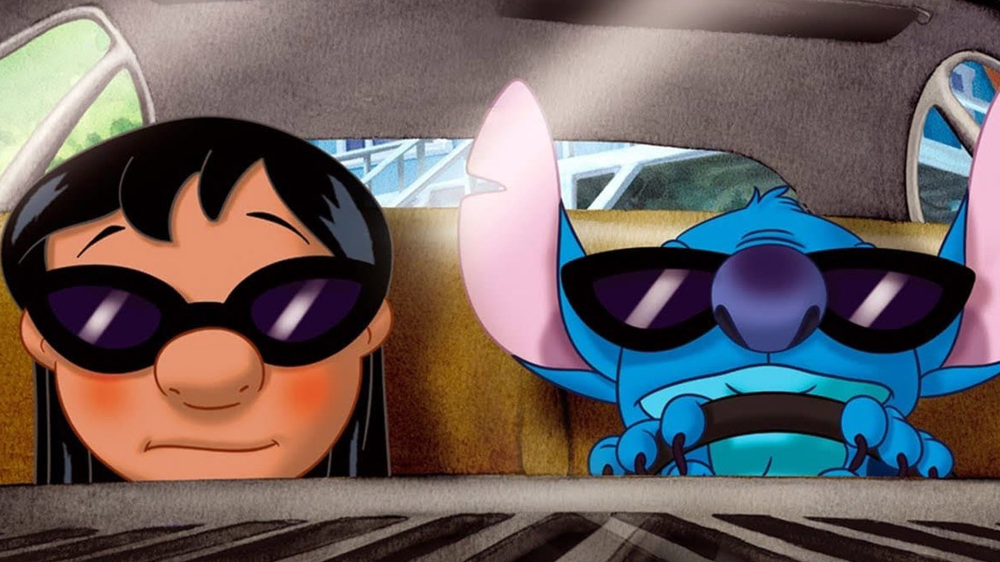

About Stitch
Stitch ist eine fiktive Figur in Disneys Lilo & Stitch-Franchise. Als illegal hergestellte, gentechnisch veränderte, außerirdische Lebensform, die einem blauen Koala ähnelt, ist er neben seinem menschlichen Adopter und besten Freund Lilo Pelekai und seinem Hauptprotagonisten eine der beiden Titelfiguren des Franchise
Stitch und Lilo
Stitch´s Eigenschaften
- Er hat Übermenschliche Kraft, Geschwindigkeit, Beweglichkeit und Haltbarkeit
- Erfahrener Nahkampf mit vier Armen
- Fähigkeit, Wände und Decken zu besteigen
- Einziehbare Krallen, Antennen, Stacheln und unteres Armpaar
- Hochflexibles Skelett und Körper
- Überempfindliches Hören und Geruchssinn
Stitch´s Freunde
Stitch hat tolle Freunden. Seine beste freundin ist Lilo,sie ist super. Klick auf denn link unten,um mehr über sie, und seine anderen freunde zu erfahren: